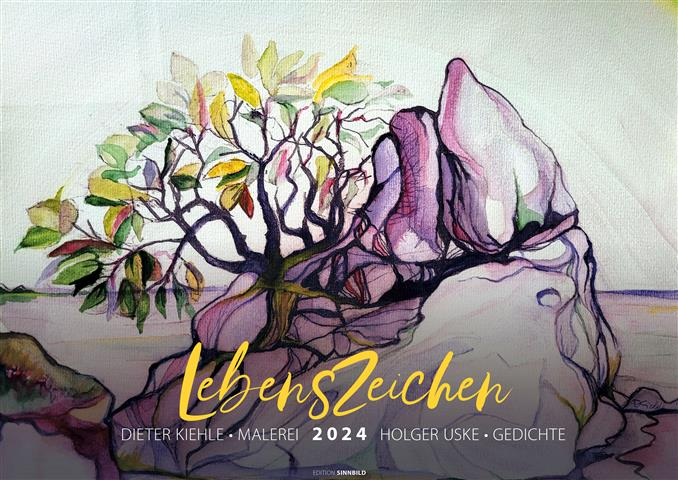
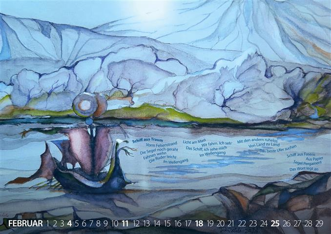
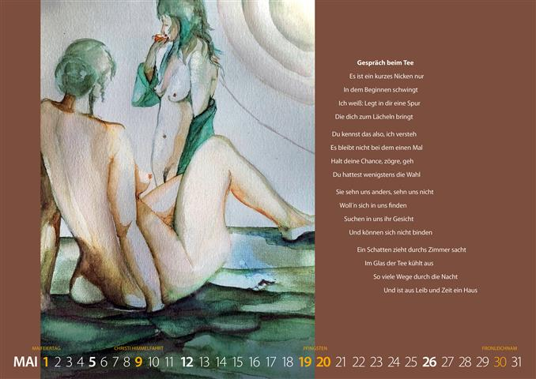
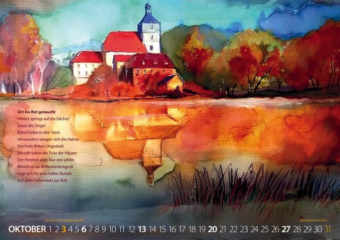

Bilder von Dieter Kiehle, Lyrik von Holger Uske. Gestaltung edition sinnbild Andreas Kuhrt.

Zum dritten Mal entschlossen sich der Maler und Zeichner Dieter Kiehle und der Lyriker Holger Uske, gemeinsam einen Kalender zu produzieren. Sie setzten dabei ihre Zusammenarbeit mit dem Suhler Gestalter Andreas Kuhrt fort. In einer kleinen Auflage von 50 Exemplaren kam dieser Kalender im Oktober 2023 auf den Markt und ist außer bei den beteiligten Künstlern auch in den Suhler Buchhandlungen „Buchhaus Suhl" und „Buchhandlung am Topfmarkt" erhältlich. Er kann dort für 15 € erworben werden. Nach den Kalendern „Wegzeichen" für 2022 und „Lichtzeichen" für 2023 folgt nun „Lebenszeichen" für 2024 bei edition sinnbild suhl.
Die bildnerischen und mitunter durchaus experimentellen Arbeiten von Dieter Kiehle waren erneut Ausgangspunkt für die lyrischen Texte von Holger Uske. Beide Autoren sind der Meinung, dass sie ihre Fertigkeiten weiterentwickeln konnten und mit diesem Kalender eine höhere künstlerische Qualität anbieten können.
Ob dies gelang, mögen die Nutzer entscheiden.
Schiff aus Traum
Vorm Felsenstrand
Die Segel noch geraht
Fahnen wehn
Die Ruder leicht
Im Wellengang
Licht am Mast
Wir fahrn. Ich seh'
Das Schiff, ich sehe mich
Mit den andern ruhelos
Von Land zu Land
Das beste Ufer suchen
Schiff aus Fasern
Aus Papier
Segel Pergament
Das Wort legt an


Gespräch beim Tee
Es ist ein kurzes Nicken nur
In dem Beginnen schwingt
Ich weiß: Legt in dir eine Spur
Die dich zum Lächeln bringt
Du kennst das also, ich versteh
Es bleibt nicht bei dem einen Mal
Halt deine Chance, zögre, geh
Du hattest wenigstens die Wahl
Sie sehn uns anders, sehn uns nicht
Woll'n sich in uns finden
Suchen in uns ihr Gesicht
Und können sich nicht binden
Ein Schatten zieht durchs Zimmer sacht
Im Glas der Tee kühlt aus
So viele Wege durch die Nacht
Und ist aus Leib und Zeit ein Haus
Ort ins Rot getaucht
Herbst springt auf die Dächer
Zaust die Ziegel
Rührt Farbe in den Teich
Verwundert wiegen sich die Halme
Rascheln Birken Ungeduld
Blinzelt selbst der Putz der Häuser
Der Himmel aber, klar wie selten
Nimmt es als Willkommensgruß
Legt sich für eine halbe Stunde
Auf dem Farbenbett zur Ruh
